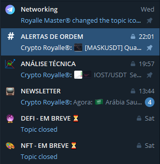

💎CRYPTO ROYALLE💎

Crypto Futures Community
Crypto Royalle é uma comunidade de criptomoedas que está revolucionando o mundo das criptomoedas. Com uma abordagem inovadora, a Crypto Royalle oferece aos seus membros uma comunidade de investidores/trades de criptomoedas, com foco em passar conhecimento, informações, dicas, analises, notícias e gerar networking. A comunidade permite que os usuários interajam e compartilhem conhecimentos, proporcionando oportunidades emocionantes para todos os entusiastas de criptomoedas.
Nossos Produtos
Para Mais Informações, navegue pelas Paginas.